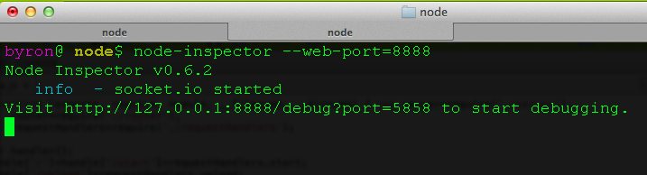
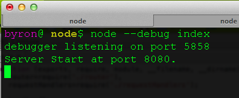
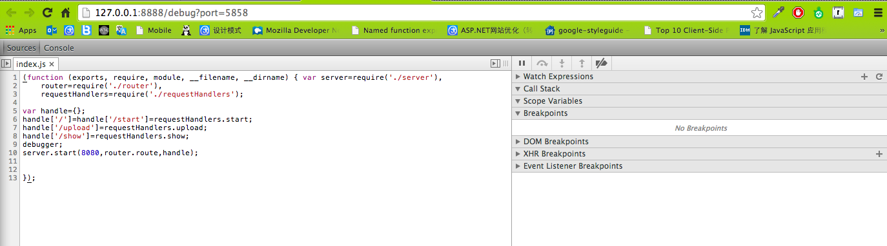

First, you have to install node-inspector package from NPM
npm install -g node-inspector
Run node inspector before starting your node application, Node-inspector monitor your node application between Browser and your application thru Websocket. You have to specify a web port number for it.

Add --debug when you start your node application
node --debug app.js

Once your Node APP is running, put the following URL into your browser. Enjoy your fights with bugs
http://127.0.0.1:8888/debug?port=5858
